from dataidea.packages import plt, sns, np, pd
Seaborn Part 2
The Python visualization library Seaborn is based on matplotlib and provides a high-level interface for drawing attractive statistical graphics.
Make use of the following aliases to import the libraries:
The basic steps to creating plots with Seaborn are
- Prepare some data
- Control figure aesthetics
- Plot with Seaborn
- Further customize your plot
tips = sns.load_dataset('tips')tips.head()| total_bill | tip | sex | smoker | day | time | size | |
|---|---|---|---|---|---|---|---|
| 0 | 16.99 | 1.01 | Female | No | Sun | Dinner | 2 |
| 1 | 10.34 | 1.66 | Male | No | Sun | Dinner | 3 |
| 2 | 21.01 | 3.50 | Male | No | Sun | Dinner | 3 |
| 3 | 23.68 | 3.31 | Male | No | Sun | Dinner | 2 |
| 4 | 24.59 | 3.61 | Female | No | Sun | Dinner | 4 |
sns.set_style("whitegrid")g = sns.lmplot(x="tip", y="total_bill", data=tips, aspect=2)
g.set_axis_labels("Tip","Total bill(USD)")
plt.show()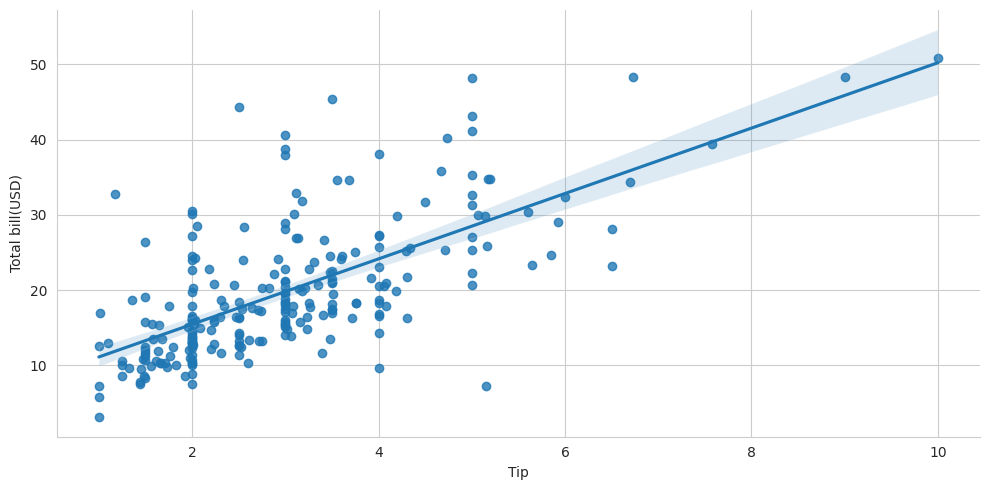
Data
Seaborn also offers built-in data sets:
uniform_data = np.random.rand(10, 12)data = pd.DataFrame({'x':np.arange(1,101),
'y':np.random.normal(0,4,100)})titanic = sns.load_dataset("titanic")
iris = sns.load_dataset("iris")fig, ax = plt.subplots()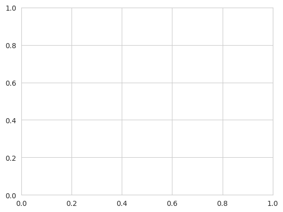
Plotting with Seaborn
Axis Grids
# Subplot grid for plotting conditional relationships
g = sns.FacetGrid(titanic, col="survived", row="sex")
g = g.map(plt.hist,"age")
#Draw a categorical plot onto a Facetgrid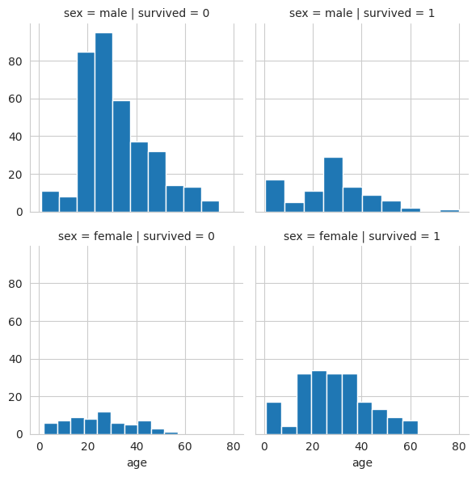
Subplot grid for plotting pairwise relationships
h = sns.PairGrid(iris)
h = h.map(plt.scatter)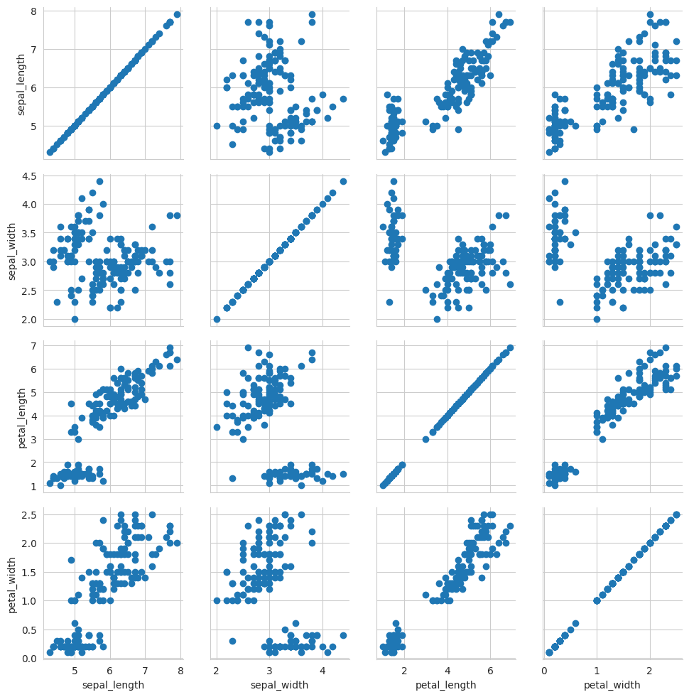
sns.pairplot(iris)
plt.show()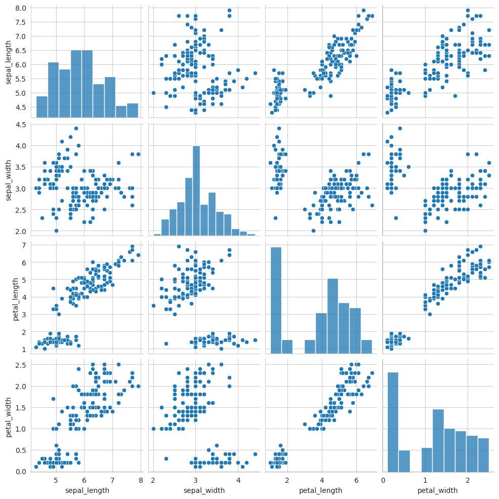
Grid for bivariate plot with marginal univariate plots
i = sns.JointGrid(x="x",
y="y",
data=data)
i = i.plot(sns.regplot,
sns.distplot)/home/jumashafara/venvs/programming_for_data_science/lib/python3.10/site-packages/seaborn/axisgrid.py:1886: UserWarning:
`distplot` is a deprecated function and will be removed in seaborn v0.14.0.
Please adapt your code to use either `displot` (a figure-level function with
similar flexibility) or `histplot` (an axes-level function for histograms).
For a guide to updating your code to use the new functions, please see
https://gist.github.com/mwaskom/de44147ed2974457ad6372750bbe5751
func(self.x, **orient_kw_x, **kwargs)
/home/jumashafara/venvs/programming_for_data_science/lib/python3.10/site-packages/seaborn/axisgrid.py:1892: UserWarning:
`distplot` is a deprecated function and will be removed in seaborn v0.14.0.
Please adapt your code to use either `displot` (a figure-level function with
similar flexibility) or `histplot` (an axes-level function for histograms).
For a guide to updating your code to use the new functions, please see
https://gist.github.com/mwaskom/de44147ed2974457ad6372750bbe5751
func(self.y, **orient_kw_y, **kwargs)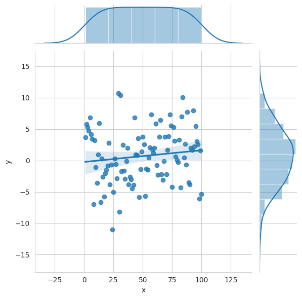
sns.lmplot(data=iris[iris.species == 'setosa'], y='sepal_length', x='sepal_width')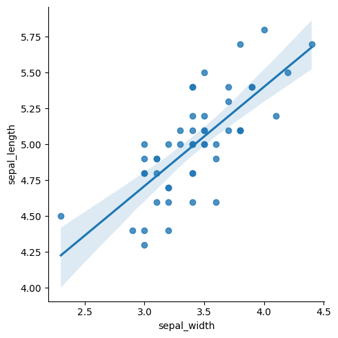
# Plot data and regression model fitsacross a FacetGrid
sns.lmplot(x="sepal_width",
y="sepal_length",
hue="species",
x_ci = 'sd',
data=iris)
plt.show()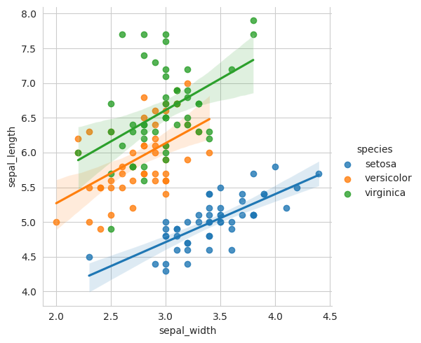
Categorical Plots
Scatterplot
Scatterplot with one categorical variable
sns.stripplot(x="species",
y="petal_length",
data=iris, hue='species')
plt.show()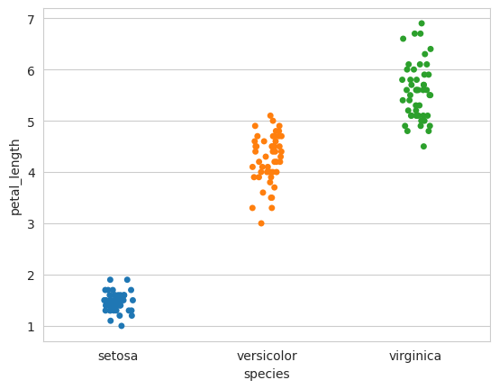
In this situation we are able to visualize the distribution of the petal lengths for each of the classes in the species(categorical) column.
Forexample we can observe that setosa has petal lengths lying between 1 and 2 units, whereas versicolor has petal lengths lying between 3 and 5 units inclusive and so on.
We can also quickly observe that virginica petals are generally longest(4.5-7) compared to the other two ie setosa(1-2) and versicolor(3-5)
Categorical scatterplot with non-overlapping points
sns.swarmplot(x="species",
y="petal_length",
data=iris, hue='species')
plt.show()/home/jumashafara/venvs/programming_for_data_science/lib/python3.10/site-packages/seaborn/categorical.py:3399: UserWarning: 12.0% of the points cannot be placed; you may want to decrease the size of the markers or use stripplot.
warnings.warn(msg, UserWarning)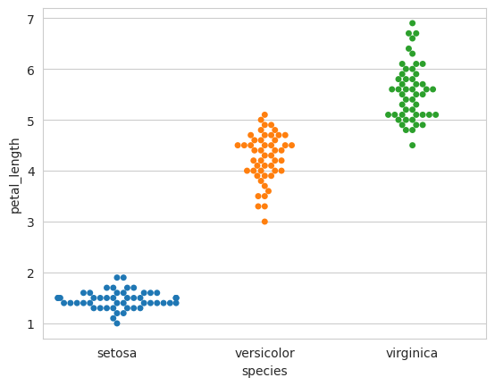
Bar Chart
Show point estimates and confidence intervals with scatterplot glyphs
sns.barplot(x="sex",
y="survived",
hue="class",
palette='Greens_d',
data=titanic)
plt.show()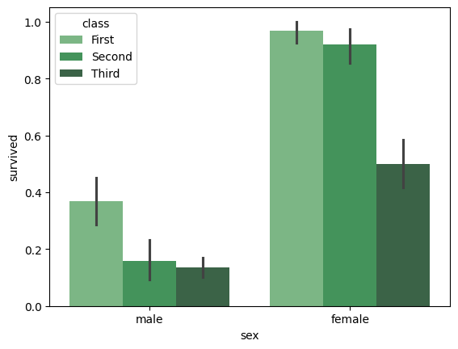
Count Plot
Show count of observations
sns.countplot(
x="deck",
data=titanic,
palette="Greens_d",
hue='survived')
plt.show()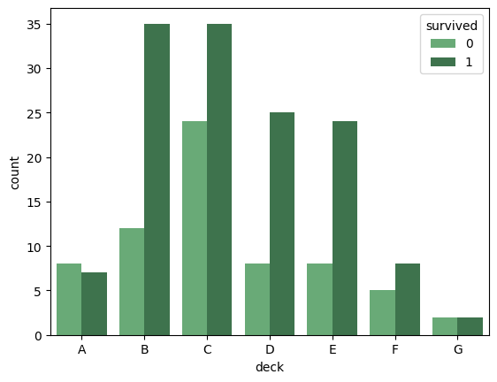
Point Plot
Show point estimates and confidence intervals as rectangular bars
sns.pointplot(x="class", y="survived", hue="sex", data=titanic,
palette={"male":"g","female":"b"}, markers=["^","o"], linestyles=["-","--"])
plt.show()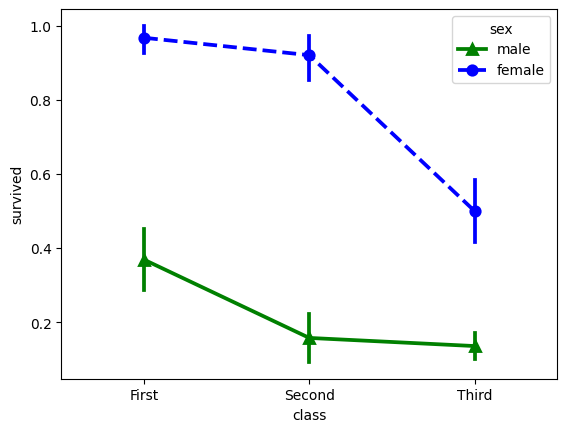
Boxplot
sns.boxplot(x="alive", y="age", hue="adult_male", data=titanic)
plt.show()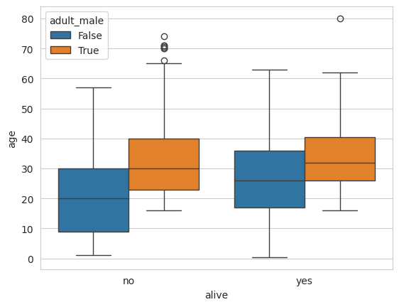
The boxplots help us visualize the distribution of the titanic passengers conditionally ie, we can see the distribution men and women given that they’re alive or not alive
sns.boxplot(data=iris, orient="h")
plt.show()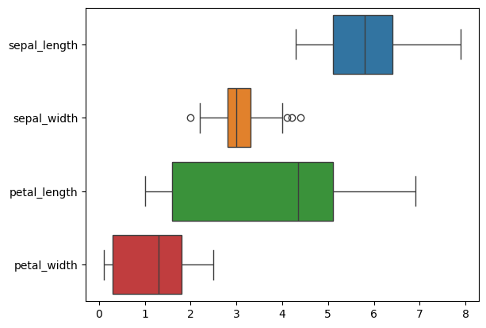
Above we can observe the distribution of the features in the entire dataset by passing in the entire dataset as the value for the data parameter.
Violin Plot
sns.violinplot(x="age",
y="sex",
hue="survived",
data=titanic)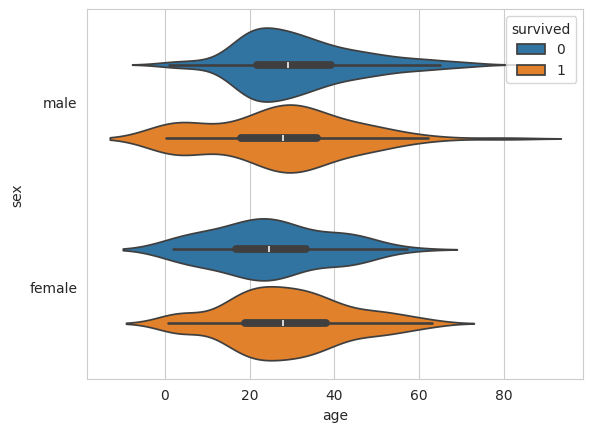
Distribution Plots
Plot univariate distribution
plot = sns.displot(data.y, kde=True, color="g")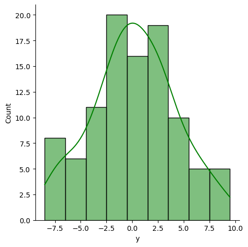
Matrix Plots
Heatmap
# Exclude non-numeric columns from correlation calculation
numeric_cols = tips.select_dtypes(include=['float64', 'int64'])
correlation_matrix = numeric_cols.corr()
# Plotting the heatmap
sns.heatmap(correlation_matrix, annot=True)
plt.title('Correlation Heatmap')
plt.show()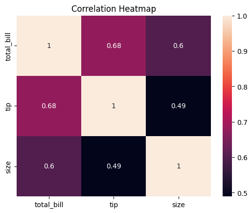
plt.show()
plt.savefig("foo.png")
# You can save a transparent figure
plt.savefig("foo.png", transparent=True)<Figure size 640x480 with 0 Axes>fig3, ax = plt.subplots()
# Create the regression plot
sns.regplot(x="petal_width", y="petal_length", data=iris, ax=ax)
# Display the plot
plt.show()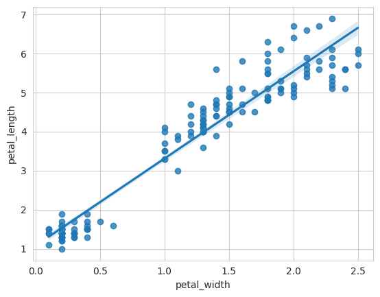